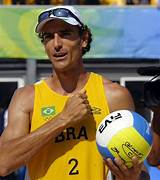

Emanuel Fernando Scheffer Rego CavMM (Curitiba, 15 de abril de 1973) é um ex-jogador brasileiro de vôlei de praia.
Competiu em cinco Jogos Olímpicos seguidos, formando dupla com o jogador Ricardo em duas delas e com Alison Cerutti na última. Participou das Olimpíadas de Atlanta 1996, Sydney 2000, Atenas 2004, Pequim 2008 e Londres 2012.
Emanuel foi escolhido como o Atleta da Última Década do Século em votação realizada pela Federação Internacional de Voleibol (FIVB). É o maior vencedor do Circuito Mundial com dez títulos, além de ser o maior vencedor de etapas do Circuito Mundial, com 77 medalhas de ouro, 37 de prata e 41 de bronze. Emanuel é ainda o jogador com mais títulos na história do voleibol de praia, 155, superando o americano Karch Kiraly. Em 2016, foi introduzido no Hall da Fama do Voleibol por sua "carreira lendária"

veja um pouco de suas jogadas